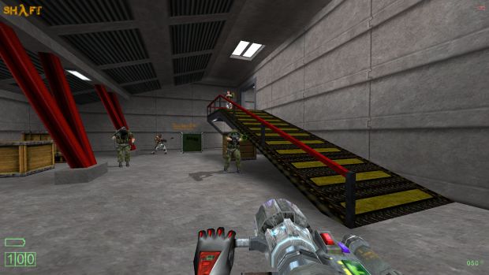

As the title states this is something I have been studying for a few weeks now and I have been trying to assemble how it all fits together. I will provide you with my thoughts and ideas and anyone can also put your thoughts and Ideas on this area that got lost in the final push to release Half Life for Retail.
This is not so much a suggestion but I think it could do with a resource thread and if you like it’s an assessment of this deleted area and is there enough content to make it a viable project?
I won’t deny that I would like the Black Mesa Team to have a crack at it even if they did not want to it could become a Mod… But It has to be first of all viable and also have to unpick a multiplayer map and re-interpret it as a single player experience. It’s not a huge area or Large map it’s pretty small and self contained it’s a map you run over twice to the dish and back again but as we all know it has to be crammed full of stuff with a solid purpose a few giggles and some good game play to make it viable but there is no denying that it is a challenging thing to grasp Communications Center.
There is perhaps debate on where it would Start… Where does this area fit into the Campaign?
When I look at how “Uplink” demo is staged I see it as being straight after Surface Tension… As soon as the Roof collapses and you are given the chapter Title “Forget about Freeman” this would be where I feel the map started so you are not in the Underground Garage you are in the Communications and Administration Center with the Truss falling and are greeted by the Scientist and Security Guard. I think "Uplink is Correct here very little was Changed you are given the mission to align the Dish and so on and the Door to the Lambda Complex cannot be opened until the Task is completed. The part where this differs is I feel the Elevator is not part of this Room in “Uplink” we simply go through a Door and remain at fairly low level not gaining much height.
Upon Entering this Door (Not Elevator) We now Transition into an “Alpha” map section. Weather this is actually the corridor section with the scurity office in “Uplink” Demo I am unsure?

I Love this Rooms Architecture It perhaps has a Corridor leading to it (Uplink Demo?) you can see the Design in the Alpha … I think this area would have a few skirmish with Aliens not Grunts they come later… This small section Leads directly into Datacore. But of Note… The Helicopter Room is not included in this section… That also comes Later.
Now we are in Datacore… The Security Guard Let’s you in.

These 2 videos Gives us an idea of what the area was to contain. Again what we are seeing in these 2 videos is again Visually appealing the Comms Control Room and the 2 large Power Generators and the Dish. There is literally no shortage of Visually interesting areas here.
If we rewind to where we are given our mission, the scientist says “The power cables are severed” This I feel must tie into the two power generators needing to be Shut down… There must be Killer electricity blocking our path to reach the Dish. I like the idea of it being in the Dark and say quite a few dead bodies strewn around but not so much in the way of enemies… traversing to the Dish you have a few alien skirmishes and Head crabs jumping out at you in the dark whilst trying to shut down the electric to make your way onto the Dish.
We hear the announcemet about “Emergency Medical Helicopter” during solving the Power Generator Puzzles. I especially like the Scientist trapped in the Blast Door from Shaft.
After the power Generation puzzles we get to the Administration center Part with the Security Turrets. Here I think should be Dr. Breens Office the other side of the Security Door. Nice little nod…Think about his TV station and so on in Half Life 2 
{kind=link}
Vox Annoucement “Message for Gordon Freeman you will not escape this time”
The placement of where the Dish is has to be next after the Turrets. We now enter into a Radioctive area… But going from the Admistration center to a Comm’s Dish we would need some form of Transition perhaps an elevator or not working Elevator. Or a small Surface section similar to Decay… You could quite easily see Breens office overlooking the Antenna Dish and perhaps a small surface section which you must traverse underground as the surface is too dangerous. Either Way it could be an off shoot of the return circuit on Datacore and I would vouch it is a small area not oversized. But we must also consider pathways being Blocked by Aerial bombardment and so on.
{kind=link}
Weather this was to include the need for a power loader to make it to the Dome i.e. Box Puzzle in Radiactive Area? Perhaps Similar to the Radiactive Corridor in “Decay” Either way I would assume probably revert back to something like the Dome from Uplink / Decay now although I don’t feel a dish within a Dome makes any sense at all… I prefer the Alpha with a more Roof type iteration for the Dish or Decay…anyway the Scientist at the Start of the Level Talks down an inter-comm and let’s you in. You align the Dish and then the HECU ambush ensues, you fight your way back through the level fighting HECU Grunts weather or not we take the Radioactive Sewer from “Uplink” here that joins with a part of Datacore…Then you must get back to the Computer Room where the Mission was Issued. I would Have the ambush in the Admistration center with Atrium and fight on the return trip. I would not want a massive stretch away from Datacore to get to the Dish.
I wonder if “Uplink” was Meant to include the wheelchair bound scientist but he was not yet created from Decay?
We Continue with Uplink Demo now Letting you through to the Lambda Complex Door… But we do not Have a Fight with a Gargantua we simply transition past a Helipad… Here we Have the G-man standing by the Osprey…See how this ties into the Garage section of Opposing Force with the Nukes and Black Ops
Perhaps Dr. Breen is on the Helicopter?
We now Continue to the Garage section of Forget about Freeman and hear the Radio Message “Forget about Freeman, we are pulling out”
This is Really all I can sort of figure out… But I still feel it’s a bit content light, I think it’s about 75% viable but there needs to be a slight bit more woven in to make it 100% viable as a restoration and I don’t know if it’s all the way there in terms of viability.
My Conclusion is that it is more a Puzzle and Platformer on the way to the Dish but more action orientated on the way back to the Lambda door.
The biggest problem I think is trying to figure out how the antenna Dish and/ or Dome and Radiation section would fit. It may simply be the more Blank Section without power generators on the other side of Datacore?
The other thought I have had is that the Helicopter Pad in the Alpha is Where the Dish would be and you have to make your way back from here meaning the Entry point is over the other side of the map from Uplink Demo (surface Tension). Although Datacore is a Looped Map It would be a closed Loop with a Blockage so you could not reach the Main Comms Room initially from which ever way you look at it (Or the Comms Room and the Uplink Computer Room are Paired down) and you would always play through the power generator section first to then get to the furthest part of the closed Loop.
Iteration Loop 1:
Uplink Demo >>>> HL Alpha Corridor >>>> Datacore >>>> Uplink Dish and Radiation
Iteration Loop 2:
Uplink Demo >>>> Datacore >>>> HL Alpha Corridor >>>> Uplink Dish and Radiation
Please give any thoughts you have on this cut area or section.
{kind=link}